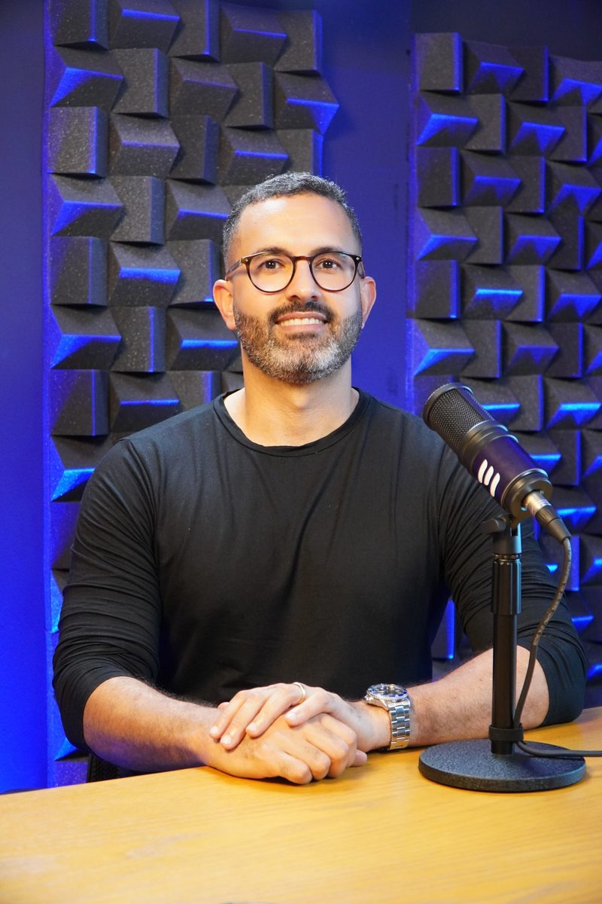

Um estudo guiado, simples e focado no que realmente cai na prova — feito para quem trabalha, se distrai fácil ou já reprovou antes.
Sem apostila confusa e sem videoaula de três horas. É o método que já levou 82% dos alunos que o aplicaram até a carteira do CRC.
7 dias de garantia — se não for para você, devolvemos tudo
Sem o Exame de Suficiência não existe CRC — e sem CRC o diploma não assina nada. O problema quase nunca é inteligência. É a forma como te mandaram estudar.
Trabalho, casa, rotina. Sobra uma ou duas horas no dia — e o cursinho pede quatro.
Abre o edital, vê dez disciplinas e estuda tudo com o mesmo peso. O que mais cai fica para depois.
Dá play, pega o celular, volta dez minutos. No fim da aula ficou a sensação de ter estudado — e só.
Chega na prova sabendo o conteúdo e erra por nervosismo. A reprovação anterior pesa mais que a matéria.
Quem passa no Exame do CFC não é quem estuda mais horas. É quem estuda o que cai, do jeito que a banca cobra, e revisa antes de esquecer.
O Método 3R foi criado com um único objetivo: aprovar. Mesmo com pouco tempo, mesmo se você acha que não aprendeu nada na faculdade.
Sem enrolação, sem apostila confusa, sem videoaula longa e cansativa. Três etapas que se repetem até a prova — e que já levaram centenas de alunos até a carteira.
Apostilas Sniper: só o que a banca cobra, nada a mais.
Retomada programada + Caderno de Ouro para a reta final.
CFC Questões + Batidão de Questões em vídeo, passo a passo.
O terceiro R acontece dentro do CFC Questões: mais de 5.000 questões cadastradas e catalogadas, com filtro por banca e assunto. Você descobre o que já domina e o que ainda derruba você — antes do dia do exame.
Um manual de estudos testado e validado, mais tudo o que precisa para chegar no exame sabendo o que fazer.
arraste para o lado
Você não decide o que estudar a cada dia. A trilha decide — e a revisão de cada mês garante que o mês anterior não se perca.
arraste para o lado
arraste para o lado
“Na primeira tentativa fiz preparatório de um cursinho famoso para concurso público. Tinha muitos PDFs extensos. Não consegui a aprovação. Na segunda tentativa fiz o CFC Academy, com PDFs bem objetivos e pequenos, fáceis de entender e com assuntos que realmente caem na prova. Outro fator essencial foi o CFC Questões. Quando fui fazer a prova estava com média de 51 e 52% no CFC Questões; na prova do CFC fiquei com 56%. O valor é bem próximo.”
“Consegui passar na primeira tentativa porque esse curso é perfeito. Fiz faculdade EAD, já tinha dois anos que havia finalizado e ainda não tinha tentado fazer a prova.”
“Adquiri a ferramenta de questões e com menos de um mês progredi muito no meu aprendizado. Logrei êxito na minha aprovação no Exame de Suficiência.”
“A metodologia de ensino é direta ao ponto, sem enrolações, e o material é de altíssima qualidade. Recomendo demais! Melhor curso que já comprei.”
“Melhor maneira para aprender e fixar o conteúdo sem cansar!”
“Melhor curso preparatório para o CRC.”
Avaliações públicas do CFC Academy no Google. Resultados individuais variam.

Contador, criador do Método 3R e fundador do CFC Academy. Montou o método olhando para uma pergunta só: o que separa quem passa no Exame do CFC de quem estuda o mesmo tanto e reprova?
Mais de 70% dos aprovados do 3R já tinham reprovado em outro curso. Não estudaram menos — estudaram do jeito errado.
| Método 3R | Cursinho tradicional | |
|---|---|---|
| Material | ✓Apostilas curtas, no recorte do que cai | ×PDFs extensos e videoaulas longas |
| Tempo de estudo por dia | ✓Menos de 2 horas | ×4 horas ou mais |
| O que estudar | ✓Prioridade pelo que mais caiu desde 2015 | ×Tudo com o mesmo peso |
| Treino em questões | ✓CFC Questões incluso, +5.000 questões | ×Banco de questões pago à parte |
| Ansiedade de prova | ✓Módulo próprio de soft skills | ×Não é tratada |
| Quem responde sua dúvida | ✓O professor, direto | ×Monitor ou estagiário |
Muita gente reprova sabendo a matéria. A ansiedade derruba no dia — e é por isso que ela tem módulo próprio aqui.
Método, treino, acompanhamento e bônus — num acesso só.
Esse é o valor da página. No WhatsApp o time tem uma condição especial para quem quer começar agora — é só pedir a sua.
Quero minha condição no WhatsAppQuero minha condiçãoAtendimento humano · 7 dias de garantia
Você tem 7 dias para assistir às aulas e analisar o conteúdo. Se entender que o método não é para você, devolvemos todo o seu dinheiro, centavo por centavo — sem precisar explicar nada.
A carteira do CRC está a uma prova de distância. A diferença entre tentar de novo do mesmo jeito e passar cabe em menos de 2 horas por dia — com o método certo.